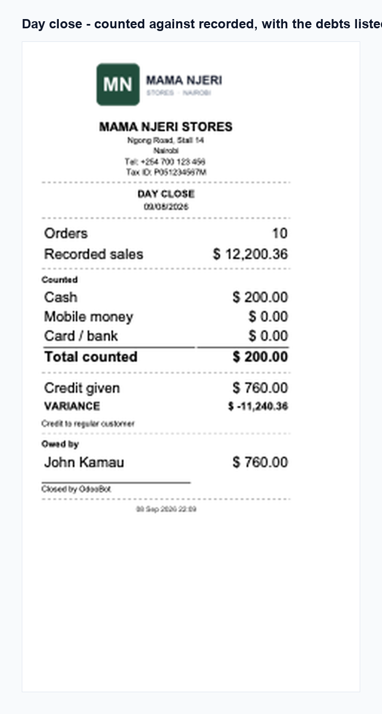
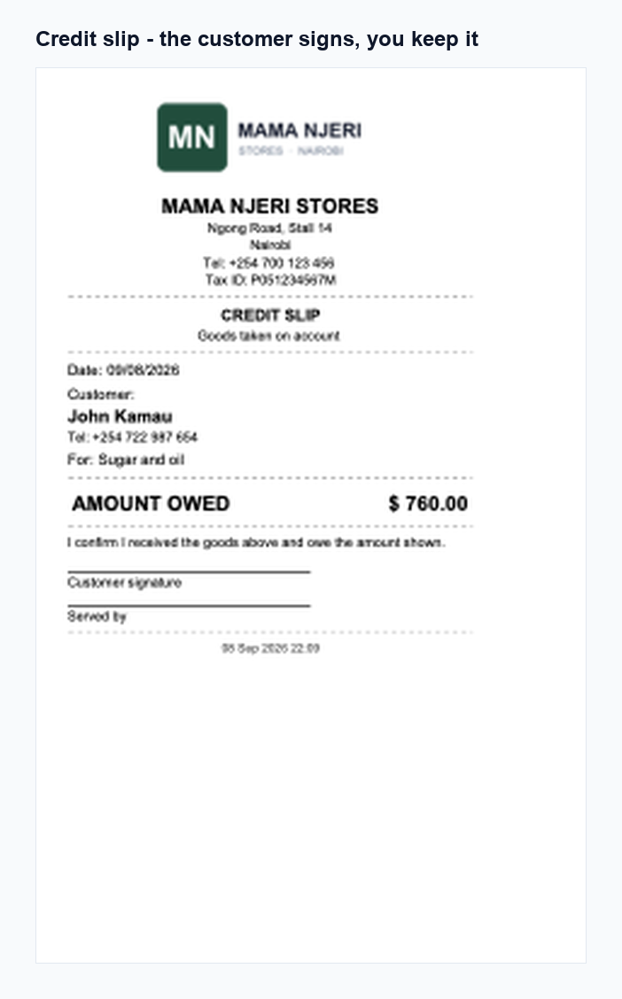
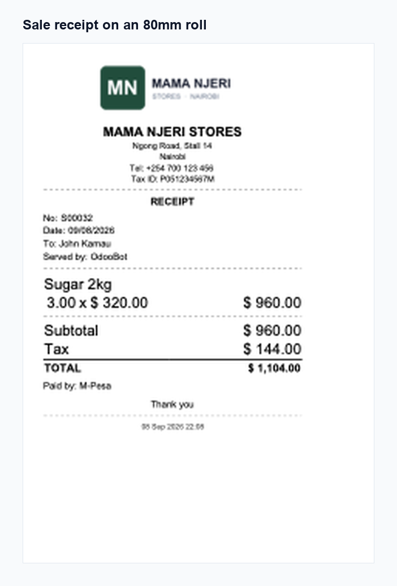

Count the money. Name the debts. Then close.
Odoo 17.0 · Community & Enterprise
It does not tell you whether the takings are actually in the drawer, who walked out with goods on a promise, or whether the day's work got done. In a shop taking cash, mobile money and card, those are the three questions that matter at closing time, and none of them has an answer in standard Odoo.
Count cash, mobile money and card against what the day's confirmed orders say you should hold. The close is refused while shop tasks are unfinished, while credit has been given without naming a customer, or while the day is out beyond your tolerance with no reason written.
A hard block at closing time gets worked around, and then the data is worse than if nothing had been enforced. So Close Anyway exists — it asks for a reason and stamps your name and the time on the day. Overridden days are filterable, and a shop whose days are mostly overridden is telling you something worth knowing.
Bank the takings, restock, chase a debtor. Mark a job Every Day and it reappears on tomorrow's close by itself.

A short till and "someone took goods" are the same fact. Naming the customer is what turns one into the other, so the close insists on it.
When the day closes, each credit entry raises a posted customer invoice. The debt reaches the customer's balance and behaves like any other receivable in Odoo — rather than sitting in a side table this module happens to keep.
Print a slip showing what was taken and what is owed, with signature lines for the customer and whoever served them. It is what settles the disagreement three weeks later.

A card sale of 1,000 does not put 1,000 in your account. Set the percentage and any flat charge per payment method, and every order shows what the provider kept.
Record what the courier charges you per delivery method, as a flat cost or a share of what the customer paid. Orders show the shortfall where you subsidised the delivery.
Cost of goods, the cost snapshot taken when a line is created, unit conversion and currency conversion all come from Odoo's standard sale margin. This adds the costs Odoo does not model rather than recalculating the ones it already does — so the figures agree with the rest of your database.
Sale receipt, credit slip, and the day close summary. Your company logo appears on all three when one is set.

Everything is stored per company, so a multi-company database keeps each shop's takings, debts and tasks separate.
Codzure Solutions
Support and feature requests: codzuresolutions@gmail.com